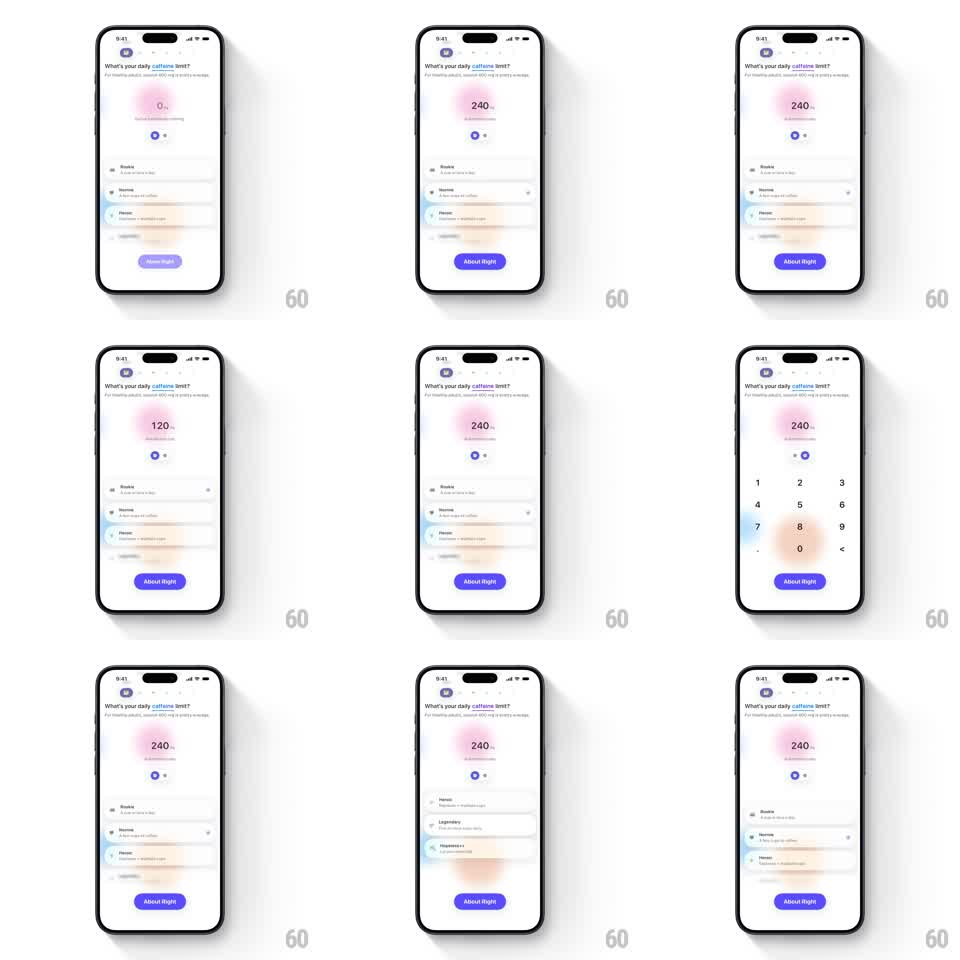

Media
Frame-by-frame

Rebuild this interaction 1:1: Alyx's daily-limit picker - a big editable value sits over soft blur blobs, preset level cards list below, and tapping the value swaps the list for a numeric keypad with a springy blur transition.

Rebuild this interaction 1:1: Alyx's daily-limit picker - a big editable value sits over soft blur blobs, preset level cards list below, and tapping the value swaps the list for a numeric keypad with a springy blur transition.
## Integration
Integration: stack-agnostic spec - springs given as stiffness/damping, timed motions as duration + curve; map every value to your framework and animation library of choice.
## Scene
Alyx onboarding, white: "What's your daily caffeine limit?" header; a large pink value ("0 mg" -> "240 mg") glowing over a pink blur blob; small +/- steppers; a list of preset cards (Rookie, Steady, Heroic, Legendary) with colored side glows; a purple "About Right" button; and, on edit, a numeric keypad replacing the list.
## Motion spec
Pattern: springy mode swap between preset list and numeric keypad, glued by a shared glowing value.
- The value, steppers, header, and button stay pinned throughout - only the middle region swaps.
- Entering edit: the preset cards blur out (blur 0 -> 14px, opacity -> 0, 250ms) while the keypad rises from below (translateY 60 -> 0, spring ~320/18) sharpening from blur 14px -> 0.
- Typing a digit: the value counts to the new number with a fast ticker (120ms per digit change) and the pink blob pulses (scale 1 -> 1.12 -> 1, 250ms) on every keystroke.
- Leaving edit: the reverse - keypad sinks and blurs out, cards unblur back in with a 30ms-per-card stagger.
- Selecting a preset card: the card scales 1 -> 0.97 -> 1 (200ms), its side glow brightens, and the value counts to the preset's number.
- The button stays enabled and breathes subtly (opacity 1 -> 0.85 -> 1, 2.5s).
## Calibration
- The blur blobs behind the value shift hue with magnitude - soft pink low, deeper rose high.
- Mode swap lands in under 400ms; it should feel like a focus pull, not a screen change.
## Reduced motion
List and keypad crossfade (200ms); value changes instantly.
## Don't miss
- The keypad's 0-9 layout includes a backspace key; typed values replace, not append past 3 digits.
- The preset cards keep their colored glows visible through the swap's blur - color leaks through.